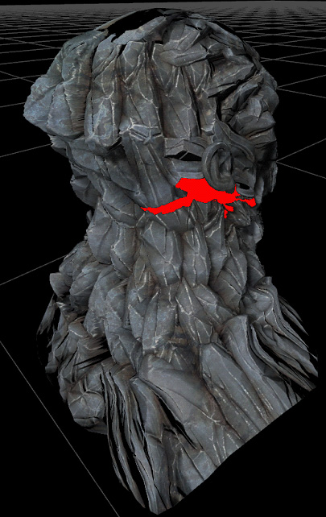

DirectX 11 Tessellation
Overview
In the classic game content pipeline geometry is created from triangles meshes. Graphics cards can render triangle meshes very efficiently so it's natural that they directly render the artist generated meshes. Unfortunately this can result in bad quality when not enough triangles are used or in slow rendering when too many triangles are used. Modern graphic cards support hardware tessellation which allows to amplify the triangle count by splitting up some input mesh into a highly tessellated render mesh. This means meshes can be created in some lower triangle density and get refined depending on distance or other properties (e.g. depending on geometry details). This process is programmable which allows to implement displacement mapping.
| |
Left: without tessellation
Right: with tesselation and displacement |
Tessellation doesn't solve all level of detail problems but for natural objects with medium scale details it works very well. Tessellation should be used with care as graphic card performance can quickly degrading when using many small triangles. Performance characteristics can be different depending on the graphics card vendor.
How to activate
Note: The feature requires DirectX 11 (how to activate can be found here).
The following image shows a material that has tessellation enabled:
The tessellation factor are set to 6 for the edge and 5 for the inner parts of the triangle.
It also uses the displacement mapping as the WorldDisplacement input of the material is used. This material uses the blue channel of a texture to displace in the direction of the normal. This was achieved by a lerp (linear interpolate) that blends between two vectors (min displacement, max displacement). As both vectors are only using the z component it will result in a vector of that form: (0,0,x). This vector is then transformed from tangent to world space by using the VectorTransform node. This is needed as the WorldDisplacement expects it's input in world space. Without using the transform node the displacement would not be aligned to the mesh surface, vertices would move along the world z axis.
Tessellation Mode
| |
Left: Without tessellation
Middle: With flat tessellation (more vertices, mostly useful with displacement)
Right: With PN triangle tessellation which softens the geometry (the silhouette became more round) |
Tessellation Factors
The material input allows to adjust the tessellation on the triangle edges (x) and the the inner part (y). The value specifies how often an edge gets subdivided. A value of 1 means no tessellation. A reasonable number is in range from 2 to 6.
The ideal factor (performance vs quality) depends on the input mesh, the displacement content and the desired quality. It can be even different for different parts of the geometry.
Smoothing Groups
The PN triangle tessellation mode also supports hard edges (not part of the original Curved PN triangles) and avoids the cracks that can appear when using hardware tessellation.
UV Seams
Using displacement mapping can results in open edges as the vertices on one side might get moved to different spot than the ones on the other side. This is currently not solved by code but content often can be adjusted to work around this problem. The following image shows (highlighted in red) the area inside the object that opened up because of the described problem.

Dynamic Tessellation Factors
The following material nodes show how the tessellation factor can be connected to the camera distance.
The value of 150 was a tweaked to work well for the mesh it was used on.
Dynamic Displacement
The following image sequence shows the transition of a model in three stages.
Displacement data can be changed over time like other material properties.
Future
The current implementation is not considered to be final. More work needs to be done to simplify the art content creation process and improve performance. Ideally UV seams should not cause cracks in the mesh.
Important!
You are viewing documentation for the Unreal Development Kit (UDK).
If you are looking for the Unreal Engine 4 documentation, please visit the Unreal Engine 4 Documentation site.